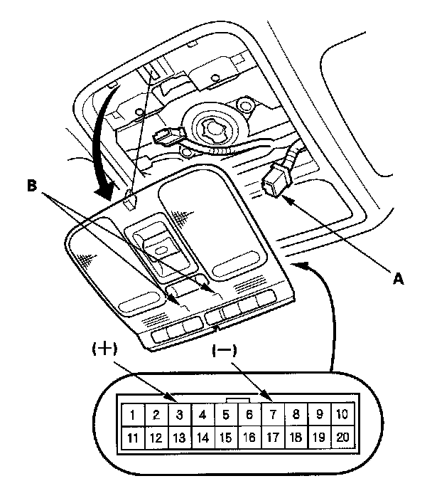

Ambient Light Test
Ambient Light Test
1. Carefully pull down the roof console and disconnect the 20P connector (A).
2. Connect the roof console connector terminal No. 3 to battery power and terminal No. 7 to body ground. The ambient lights (B) should turn on. If they do not turn on, replace the roof console.